The Fast and the Furious: Tokyo Drift
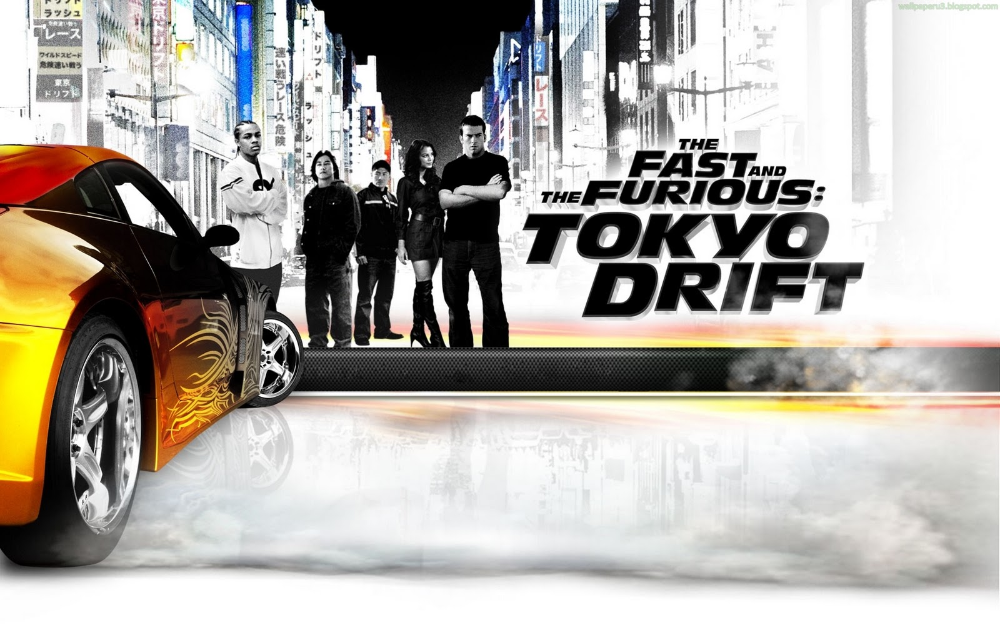
The Fast and the Furious: Tokyo Drift (2006) is the third film in the franchise (released after 2 Fast 2 Furious but chronologically set later, between Fast & Furious 6 and Furious 7). It stars Lucas Black as Sean Boswell and introduces Sung Kang’s Han Lue as a major character. It focuses on drift racing rather than the pure street racing of the earlier movies.
Synopsis
A troubled American teenager is sent to Tokyo to avoid jail time. He immerses himself in the city’s underground drift-racing scene, challenges the local “Drift King,” gets involved with the Drift King’s girlfriend, and ends up tangled with the Yakuza.
Plot
In Oro Valley, Arizona, high-school troublemaker and street racer Sean Boswell (Lucas Black) races a rival (Clay) for the affections of a girl. The race ends in a major crash that totals Sean’s car. Because he is a repeat offender, he is given a choice: jail or living with his estranged father (a U.S. Navy officer stationed in Tokyo). He chooses Tokyo.
In Tokyo, Sean feels like an outsider (“gaijin”). He befriends fellow military brat Twinkie (Bow Wow), who introduces him to the neon-lit underground world of drift racing. At a parking-garage meet, Sean notices Neela (Nathalie Kelley), the girlfriend of Takashi (Brian Tee), known as the Drift King (DK). DK has strong ties to the Yakuza through his uncle, crime boss Kamata (Sonny Chiba).
Sean impulsively challenges DK to a race and borrows a Nissan Silvia from Han Lue (Sung Kang), a laid-back American expatriate and skilled drifter who works with DK. Sean loses badly because he has no experience with drifting (controlled slides through tight corners). The car is wrecked, and Sean must work for Han to pay off the debt.
Han takes Sean under his wing, teaches him proper drifting technique, and becomes a mentor/friend figure. Sean grows closer to Neela, which further angers DK. Tensions escalate when it is revealed that Han has been skimming money from the Yakuza operations. A high-speed chase through Tokyo follows; Han is hit by another vehicle and his car explodes (apparently killing him—later retconned in the larger franchise).
Sean confronts Kamata and proposes a final mountain-road race against DK: the loser must leave Tokyo permanently. Sean rebuilds a car (using parts from the wrecked Silvia and his father’s Mustang) and trains intensively. In the climactic downhill race, DK tries dirty tactics, but Sean wins. Kamata honors the deal, and Sean becomes the new Drift King.
In a post-credits cameo, Dom Toretto (Vin Diesel) arrives in Tokyo and challenges Sean to a race, linking the film more tightly to the rest of the saga.
The movie is known for its stylish drifting sequences, Tokyo nightlife aesthetic, and Han’s memorable “I don’t have friends, I got family” philosophy (a line that becomes central to the franchise).
-
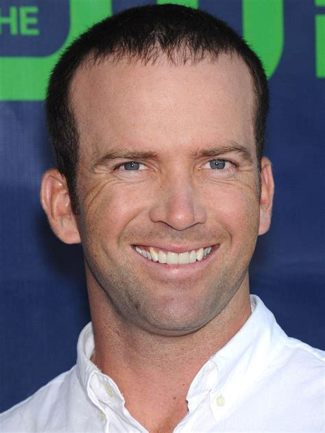
Lucas Black as Sean Boswell: A young man interested in street racing.
-
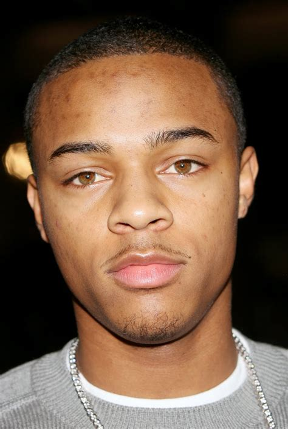
Bow Wow as "Twinkie": Sean's first friend he meets in Tokyo, who sells various consumer goods and introduces Sean to drift racing.
-
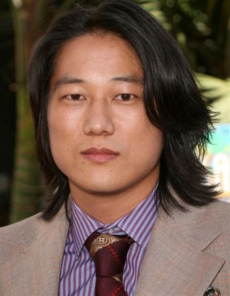
Sung Kang as Han Lue: DK's business partner and old friend of Dominic Toretto, who befriends Sean and teaches him how to drift.
-
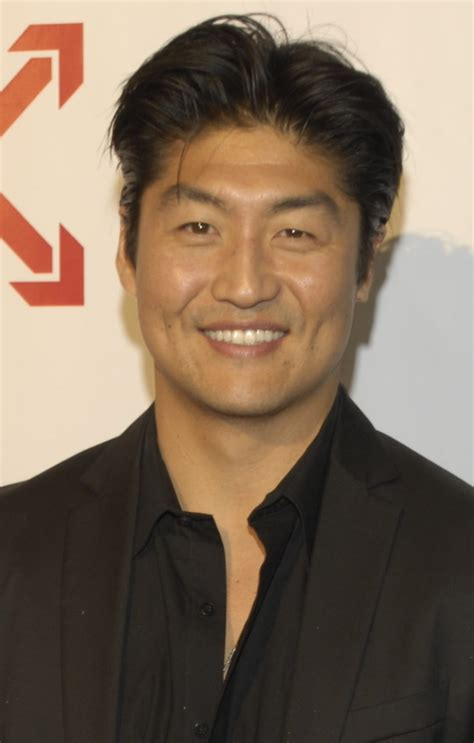
Brian Tee as Takashi: Sean's enemy who is acknowledged as the best drift racer and given the title "Drift King", or simply "D.K.".
-
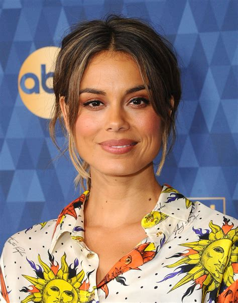
Nathalie Kelley as Neela Ezar: Takashi's girlfriend who later falls for Sean.
-
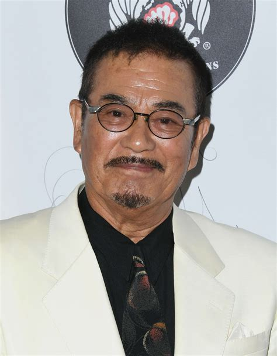
Sonny Chiba (credited as JJ Sonny Chiba) as Kamata: Takashi's uncle who is the head of the yakuza.
-
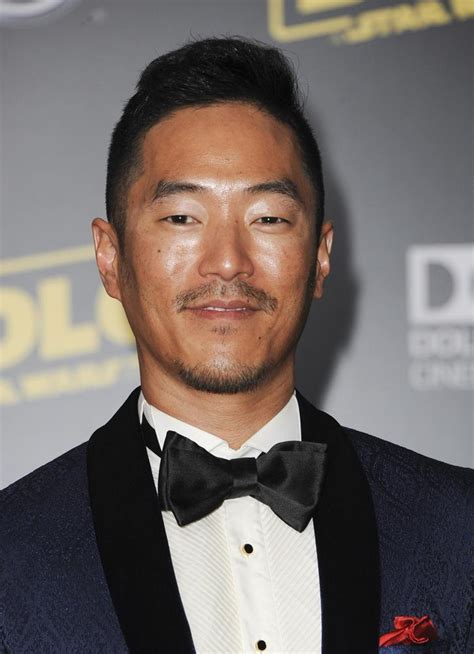
Leonardo Nam as Morimoto: Takashi's right-hand man.
-
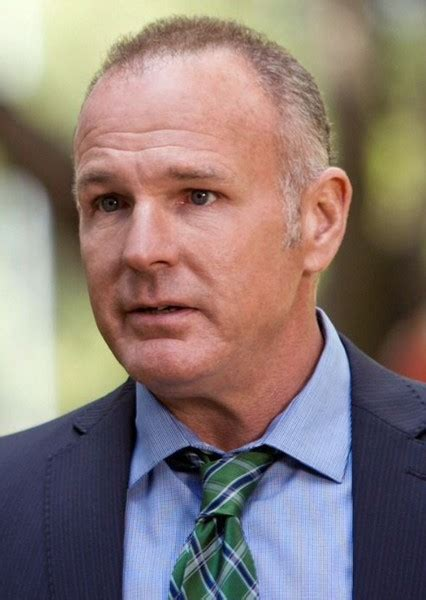
Brian Goodman as Lieutenant Boswell: Sean's father.
-
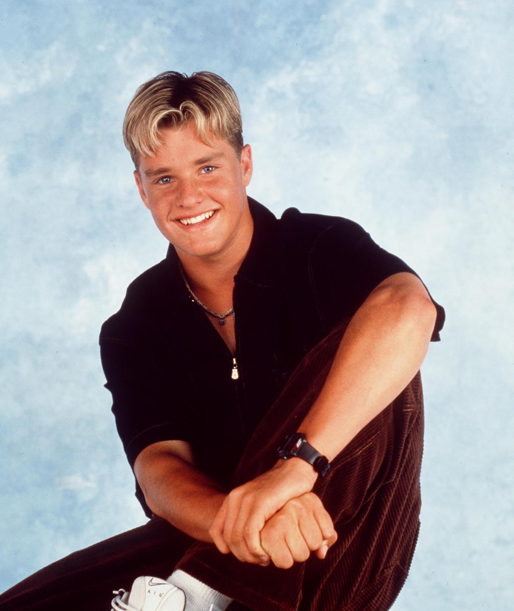
Zachery Ty Bryan as Clay: The quarterback of Sean's school whom Sean races at the beginning of the film.
-
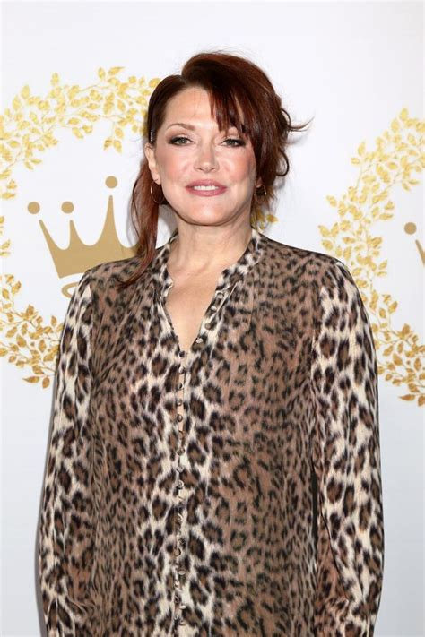
Lynda Boyd as Ms. Boswell: Sean's mother who is fed up with moving them around and sends him to Tokyo, Japan to live with his father.
-
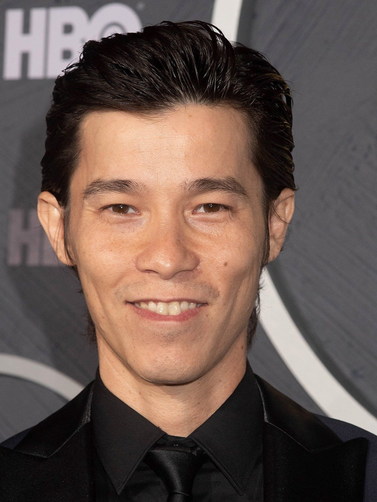
Jason Tobin as Earl: One of Han's friends who specializes in tuning the cars, along with Reiko.
-
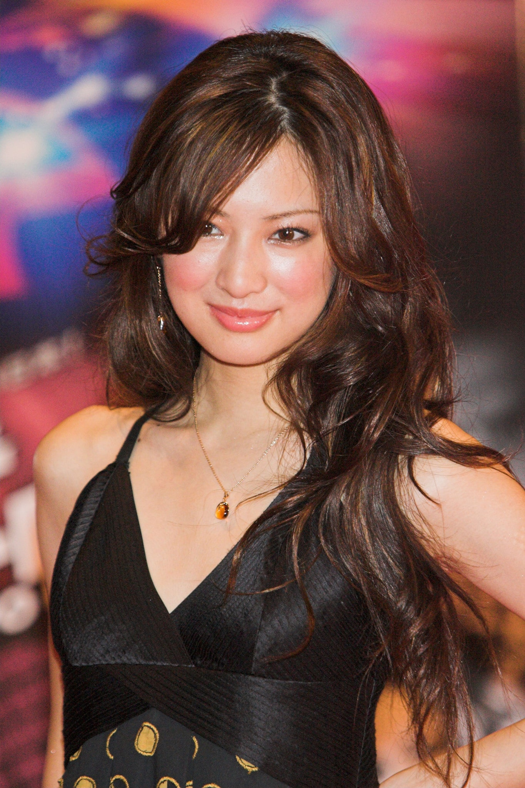
Keiko Kitagawa as Reiko: Earl's friend and fellow tuner.
-
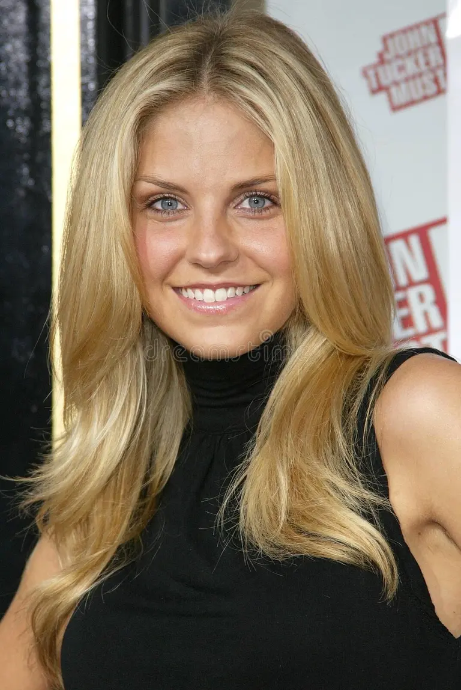
Nikki Griffin as Cindy: Clay's girlfriend, who suggests that Clay and Sean race to win her.
-
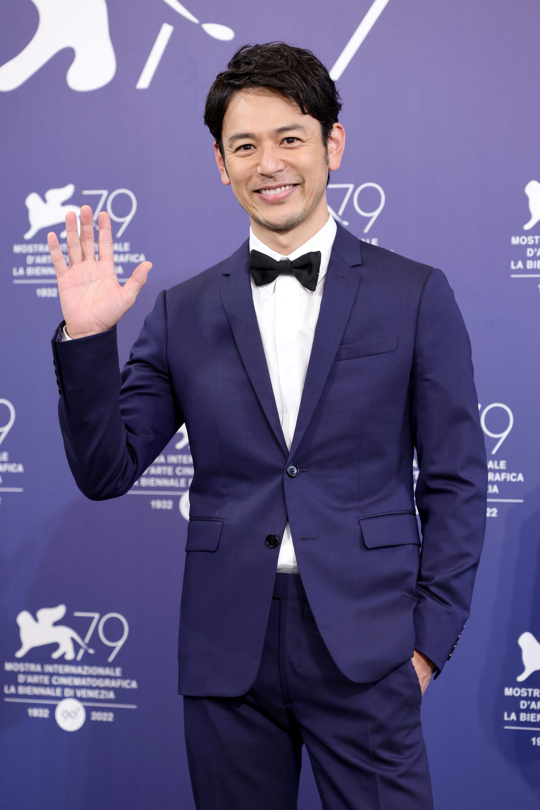
Satoshi Tsumabuki as Exceedingly Handsome Guy: Who starts the first race between Sean and Takashi (cameo)
-
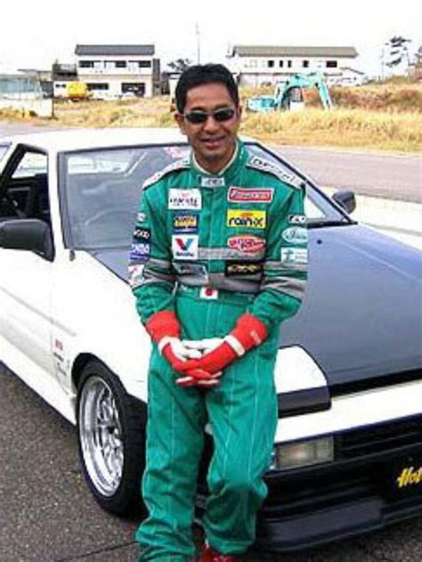
Keiichi Tsuchiya as an elderly fisherman (uncredited cameo)
-
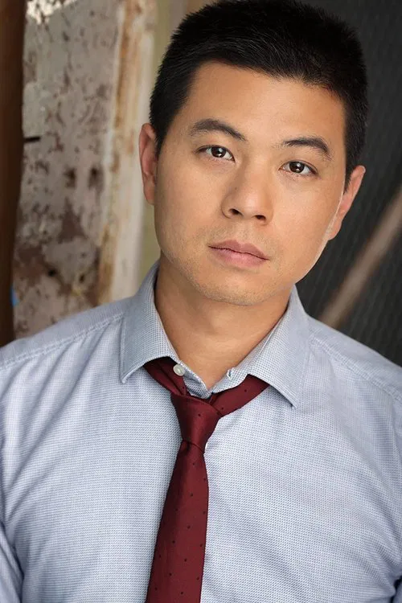
Kazutoshi Wadakura as an elderly fisherman (uncredited cameo)
-

Vin Diesel as Dominic Toretto (uncredited cameo)
IMDb User Reviews - The Fast and the Furious: Tokyo Drift (2006)
My Review (8/10) - Kenshee Dampilag
Alright so Tokyo Drift is pretty solid for what it is. Sean gets shipped off to Japan cause he keeps wrecking cars and ends up in this whole underground drift scene. The races look cool as hell especially the mountain one at the end and Han is easily the best part of the movie. Soundtrack slaps too.
Acting is kinda mid and the plot is basic as heck but the cars and the Tokyo vibes carry it. Better than 2 Fast 2 Furious for sure. Not the deepest film but if you just wanna watch people slide around corners it's a good time.
Review 1 (7/10) - sarnieken
Look behind the woeful accent and this is actually a good movie. The first F&F was about racing, then went all Miami Vice. A final return to the street racing scene had to move away from the original cast as they had lost their 'From the streets' appeal. Anyway back to this, some sweet cars that aren't the massively expensive hyper cars of later episodes and some trick driving to boot. A quality film if you manage to watch it a couple of times and don't dwell on the accent.
Review 2 (7/10) - gettodamoofies
FILM: 7.0 Rewatching the 2006 film The Fast and the Furious: Tokyo Drift, I find myself enjoying it more than most people seem to. So, here's an unpopular opinion: Tokyo Drift ties as my third favourite film in the series. The film ramps up the fun straight away, ditches the cheese of the second instalment, and goes for an original plot. One of the aspects I appreciate most about Tokyo Drift is its unique setting and storyline.
Review 3 - superratty-tmy
The Cars do the talking. Directed by Justin Lin. Starring: Mitsubishi Evo 9, Nissan Silva, Ford Mustang, RX 7, Toyota Chaser, Lucas Black, Bow Wow, Nathalie Kelly, Sung Kang, Sonny Chiba. I think the Mitsubishi should get a best actor nomination for next year's Oscars. C - Because it served its purpose in entertaining me with awesome drifts, over-sized exhaust pipes, and kick butt photography for a car racing film.
Media
Movie Pictures:
Takashi with Neela
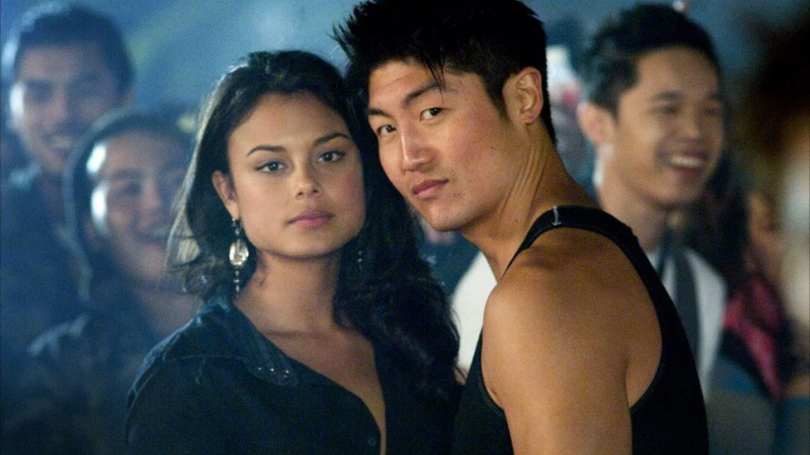
Sean with Mitsubishi Lancer
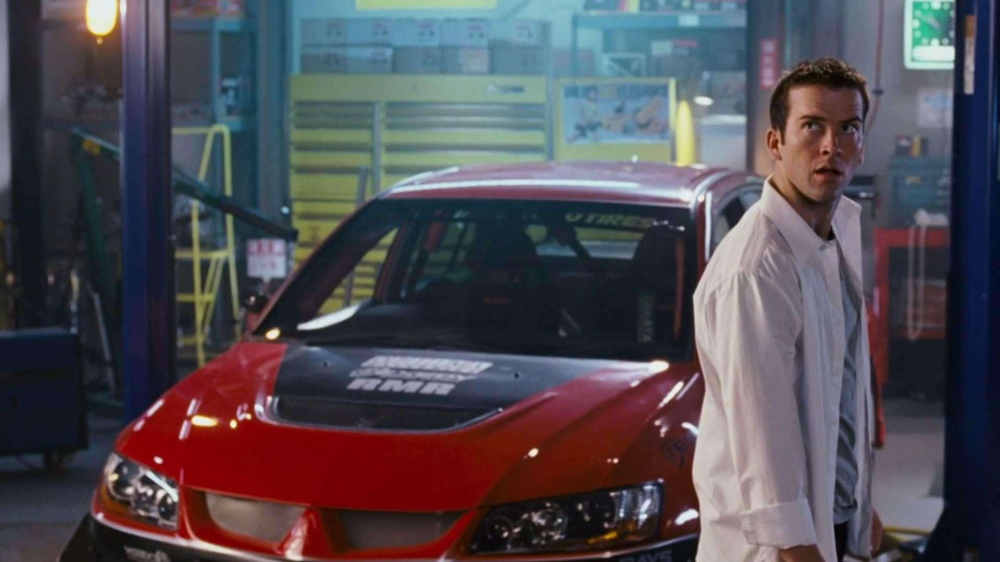
Twinkie and Girls
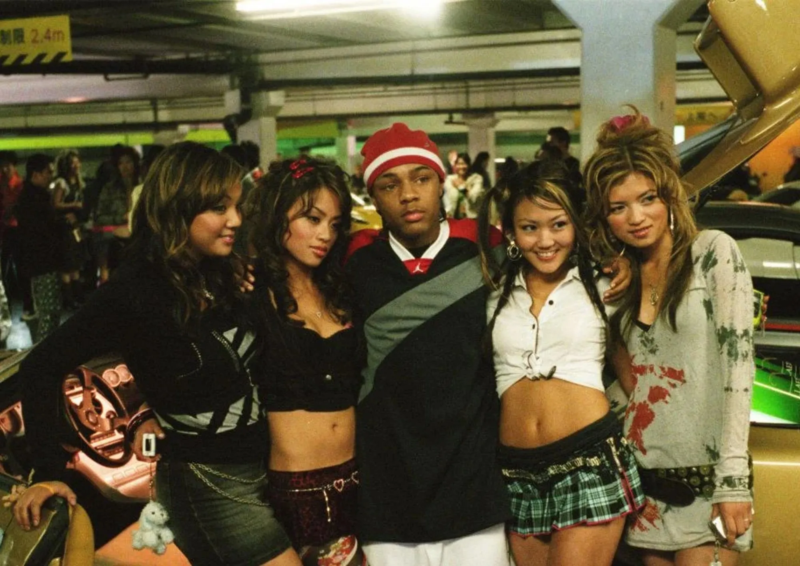
Links
Official Trailer:
Watch Tokyo Drift Trailer on YouTube
IMDb Page:
The Fast and the Furious: Tokyo Drift on IMDb